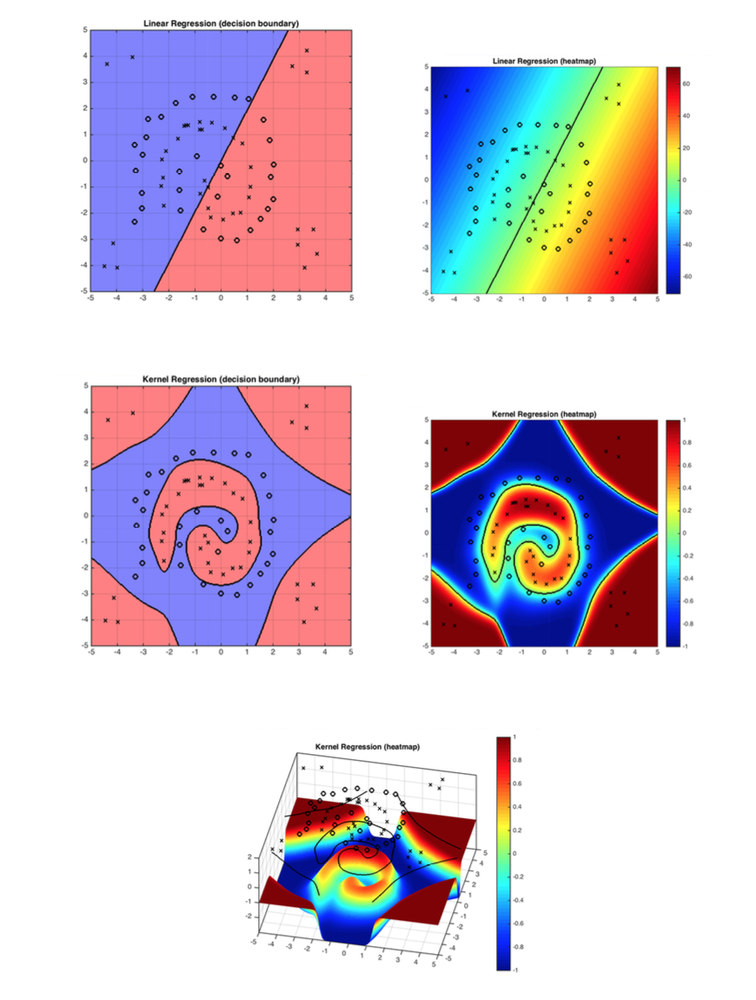

Advantage: It is simple, and your problem stays convex and well behaved. (i.e.you can still use your normal gradient descent descent code)
Disadvantage: $\phi(\mathbf{x})$ might be very high dimensional. (Let's worry about this later)
Consider the following example: $\mathbf{x}=\begin{pmatrix}x_1\\ x_2\\ \vdots \\ x_d \end{pmatrix}$, and define $\phi(\mathbf{x})=\begin{pmatrix}1\\ x_1\\ \vdots \\x_d \\ x_1x_2 \\ \vdots \\ x_{d-1}x_d\\ \vdots \\x_1x_2\cdots x_d \end{pmatrix}$.
Quiz: What is the dimensionality of $\phi(\mathbf{x})$?
So, as is shown above, $\phi(\mathbf{x})$ is very expressive but the dimensionality is extremely high.
Now, note that when we do gradient descent with many loss functions, the gradient is a linear combination of the input samples. Take squared loss for example:
\begin{equation} \ell(\mathbf{w}) = \sum_{i=1}^n (\mathbf{w}^\top \mathbf{x}_i-y_i)^2\label{eq:c15:sql} \end{equation} The gradient descent rule, with step-size $s>0$, updates $\mathbf{w}$ over time, \begin{equation} w_{t+1} \leftarrow w_t - s(\frac{\partial \ell}{\partial \mathbf{w}})\ \textrm{ where: } \frac{\partial \ell}{\partial \mathbf{w}}=\sum_{i=1}^n \underbrace{2(\mathbf{w}^\top \mathbf{x}_i-y_i)}_{\gamma_i\ :\ \textrm{function of $\mathbf{x}_i, y_i$}} \mathbf{x}_i = \sum_{i=1}^n\gamma_i \mathbf{x}_i \end{equation} We will now show that we can express $\mathbf{w}$ as a linear combination of all input vectors, \begin{equation} \mathbf{w}=\sum_{i=1}^n \alpha_i {\mathbf{x}}_i.\label{eq:c15:alphas} \end{equation} Since the loss is convex, the final solution is independent of the initialization, and we can initialize $\mathbf{w}^0$ to be whatever we want. For convenience, let us pick $\mathbf{w}_0=\begin{pmatrix}0 \\ \vdots \\ 0\end{pmatrix}$. For this initial choice of $\mathbf{w}_0$, the linear combination in $\mathbf{w}=\sum_{i=1}^n \alpha_i {\mathbf{x}}_i$ is trivially $\alpha_1=\dots=\alpha_n=0$. We now show that throughout the entire gradient descent optimization such coefficients $\alpha_1,\dots,\alpha_n$ must always exist, as we can re-write the gradient updates entirely in terms of updating the $\alpha_i$ coefficients: \begin{align} \mathbf{w}_1=&\mathbf{w}_0-s\sum_{i=1}^n2(\mathbf{w}_0^\top \mathbf{x}_i-y_i)\mathbf{x}_i=\sum_{i=1}^n \alpha_i^0 {\mathbf{x}}_i-s\sum_{i=1}^n\gamma_i^0\mathbf{x}_i=\sum_{i=1}^n\alpha_i^1\mathbf{x}_i&(\textrm{with $\alpha_i^1=\alpha_i^0-s\gamma_i^0$})\nonumber\\ \mathbf{w}_2=&\mathbf{w}_1-s\sum_{i=1}^n2(\mathbf{w}_1^\top \mathbf{x}_i-y_i)\mathbf{x}_i=\sum_{i=1}^n \alpha_i^1\mathbf{x}_i-s\sum_{i=1}^n\gamma_i^1\mathbf{x}_i=\sum_{i=1}^n\alpha_i^2\mathbf{x}_i&(\textrm{with $\alpha_i^2=\alpha_i^1\mathbf{x}_i-s\gamma_i^1$})\nonumber\\ \mathbf{w}_3=&\mathbf{w}_2-s\sum_{i=1}^n2(\mathbf{w}_2^\top \mathbf{x}_i-y_i)\mathbf{x}_i=\sum_{i=1}^n \alpha_i^2\mathbf{x}_i-s\sum_{i=1}^n\gamma_i^2\mathbf{x}_i=\sum_{i=1}^n\alpha_i^3\mathbf{x}_i&(\textrm{with $\alpha_i^3=\alpha_i^2-s\gamma_i^2$})\nonumber\\ \cdots & \qquad\qquad\qquad\cdots &\cdots\nonumber\\ \mathbf{w}_t=&\mathbf{w}_{t-1}-s\sum_{i=1}^n2(\mathbf{w}_{t-1}^\top \mathbf{x}_i-y_i)\mathbf{x}_i=\sum_{i=1}^n \alpha_i^{t-1}\mathbf{x}_i-s\sum_{i=1}^n\gamma_i^{t-1}\mathbf{x}_i=\sum_{i=1}^n\alpha_i^t\mathbf{x}_i&(\textrm{with $\alpha_i^t=\alpha_i^{t-1}-s\gamma_i^{t-1}$})\nonumber \end{align} The update-rule for $\alpha_i^t$ is thus \begin{equation} \alpha_i^t=\alpha_i^{t-1}-s\gamma_i^{t-1}, \textrm{ and we have } \alpha_i^t=-s\sum_{r=0}^{t-1}\gamma_i^{r}. \end{equation} In other words, we can perform the entire gradient descent update rule without ever expressing $\mathbf{w}$ explicitly. We just keep track of the $n$ coefficients $\alpha_1,\dots,\alpha_n$. Now that $\mathbf{w}$ can be written as a linear combination of the training set, we can also express the inner-product of $\mathbf{w}$ with any input ${\mathbf{x}}_i$ purely in terms of inner-products between training inputs: \begin{equation} \mathbf{w}^\top {\mathbf{x}}_j=\sum_{i=1}^n \alpha_i {\mathbf{x}}_i^\top{\mathbf{x}}_j.\nonumber \end{equation} Consequently, we can also re-write the squared-loss from $\ell(\mathbf{w}) = \sum_{i=1}^n (\mathbf{w}^\top \mathbf{x}_i-y_i)^2$ entirely in terms of inner-product between training inputs: \begin{equation} \ell(\mathbf{\alpha}) = \sum_{i=1}^n \left(\sum_{j=1}^n\alpha_j\mathbf{x}_j^\top \mathbf{x}_i-y_i\right)^2\label{eq:c15:sql:ip} \end{equation} During test-time we also only need these coefficients to make a prediction on a test-input $x_t$, and can write the entire classifier in terms of inner-products between the test point and training points: \begin{equation} h({\mathbf{x}}_t)=\mathbf{w}^\top {\mathbf{x}}_t=\sum_{j=1}^n\alpha_j{\mathbf{x}}_j^\top {\mathbf{x}}_t. \end{equation} Do you notice a theme? The only information we ever need in order to learn a hyper-plane classifier with the squared-loss is inner-products between all pairs of data vectors.Linear: $\mathsf{K}(\mathbf{x},\mathbf{z})=\mathbf{x}^\top \mathbf{z}$.
(The linear kernel is equivalent to just using a good old linear classifier - but it can be faster to use a kernel matrix if the dimensionality $d$ of the data is high.)
Polynomial: $\mathsf{K}(\mathbf{x},\mathbf{z})=(1+\mathbf{x}^\top \mathbf{z})^d$.
Radial Basis Function (RBF) (aka Gaussian Kernel): $\mathsf{K}(\mathbf{x},\mathbf{z})= e^\frac{-\|\mathbf{x}-\mathbf{z}\|^2}{\sigma^2}$.
The RBF kernel is the most popular Kernel! It is a Universal approximator!! Its corresponding feature vector is infinite dimensional.
In the following we provide some other kernels.
Exponential Kernel: $\mathsf{K}(\mathbf{x},\mathbf{z})= e^\frac{-\| \mathbf{x}-\mathbf{z}\|}{2\sigma^2}$
Laplacian Kernel: $\mathsf{K}(\mathbf{x},\mathbf{z})= e^\frac{-| \mathbf{x}-\mathbf{z}|}{\sigma}$
Sigmoid Kernel: $\mathsf{K}(\mathbf{x},\mathbf{z})=\tanh(\mathbf{a}\mathbf{x}^\top + c)$
Think about it: Can any function $\mathsf{K}(\cdot,\cdot)$ be used as a kernel?
No, the matrix $\mathsf{K}(\mathbf{x}_i,\mathbf{x}_j)$ has to correspond to real inner-products after some transformation ${\mathbf{x}}\rightarrow \phi({\mathbf{x}})$. This is the case if and only if $\mathsf{K}$ is positive semi-definite.Definition: A matrix $A\in \mathbb{R}^{n\times n}$ is positive semi-definite iff $\forall \mathbf{q}\in\mathbb{R}^n$, $\mathbf{q}^\top A\mathbf{q}\geq 0$.
Why is that?
Remember $\mathsf{K}(\mathbf{x},\mathbf{z})=\phi(\mathbf{x})^\top \phi(\mathbf{z})$. A matrix of form $A=\begin{pmatrix} \mathbf{x}_1^\top \mathbf{x}_1, ..., \mathbf{x}_1^\top \mathbf{x}_n \\ \vdots ~ \vdots \\ \mathbf{x}_n^\top \mathbf{x}_1, ..., \mathbf{x}_n^\top \mathbf{x}_n \end{pmatrix}=\begin{pmatrix} \mathbf{x}_1\\ \vdots \\ \mathbf{x}_n \end{pmatrix} \begin{pmatrix} \mathbf{x}_1, \cdots \mathbf{x}_n \end{pmatrix}$ must be positive semi-definite because: $\mathbf{q}^\top A\mathbf{q}=(\underbrace{\begin{pmatrix} \mathbf{x}_1, \cdots \mathbf{x}_n \end{pmatrix}\mathbf{q}}_{\text{a vector with the same dimension of } \mathbf{x}_i})^\top (\begin{pmatrix} \mathbf{x}_1, \cdots \mathbf{x}_n \end{pmatrix}\mathbf{q})\geq 0$ for $\forall \mathbf{q}\in\mathbb{R}^n$.You can even define kernels over sets, strings, graphs and molecules.
 Figure 1: The demo shows how kernel function solves the problem linear classifiers can not solve. RBF works well with the decision boundary in this case.